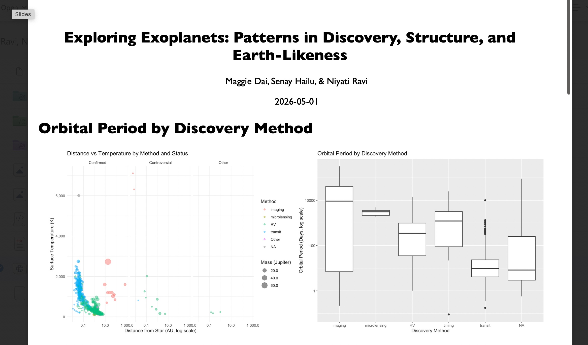
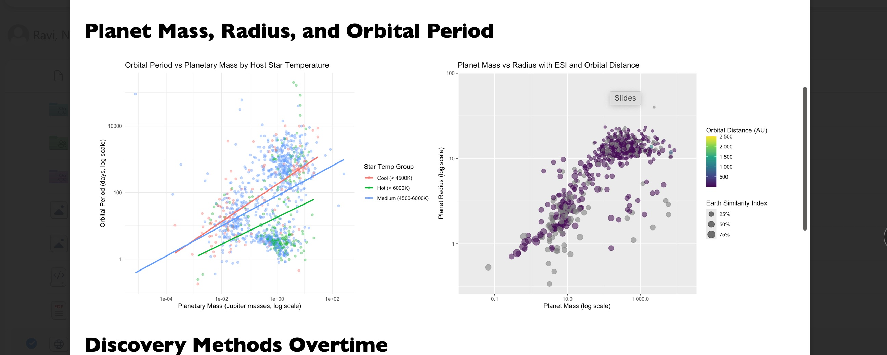
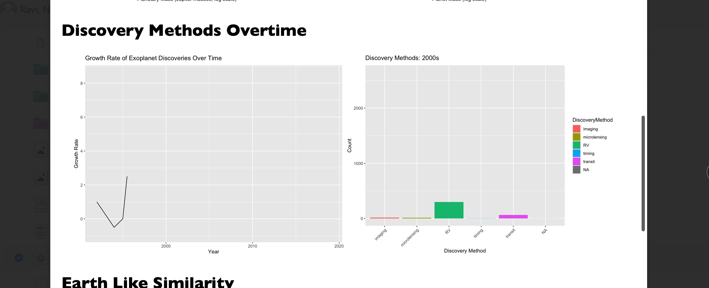
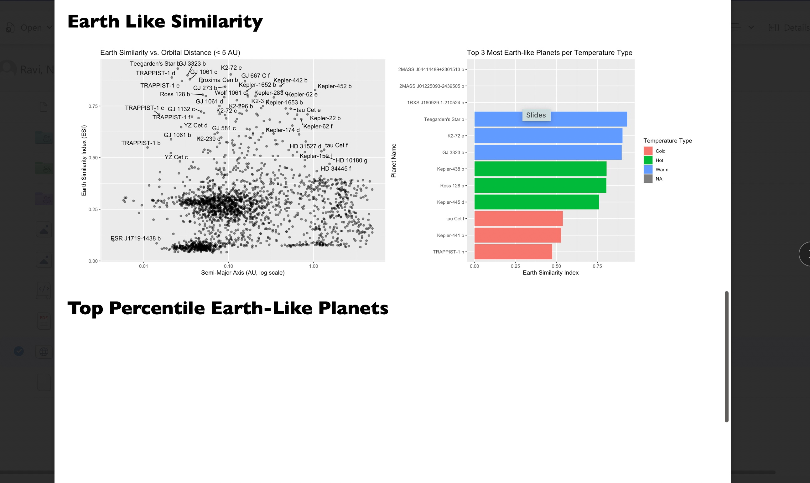

A data analysis project by Maggie Dai, Senay Hailu, & Niyati Ravi — examining thousands of confirmed exoplanets to uncover patterns in how we find worlds beyond our solar system.
I'm a sophomore at Emory University's Goizueta Business School, pursuing a dual concentration in Finance and Data Science. Born in Ethiopia, raised with a deep appreciation for education and service, I've always been drawn to the intersection of numbers and narrative — whether that's analyzing investment targets at a private equity firm or uncovering patterns in distant star systems.
My journey into data science began not in a classroom, but in necessity. As co-founder of Novel Digital Learning, a nonprofit bridging the technology gap in post-war Addis Ababa, I saw firsthand how data literacy — knowing how to collect, clean, and communicate data — could transform communities. That experience pushed me to formalize my skills.
At Emory, I've studied everything from Python to R to financial modeling, working simultaneously as an equity research analyst, a finance fellow with MLT, and a data analytics officer. Each role has reinforced the same truth: data without storytelling is just noise.
This project is a natural expression of who I am — a Questbridge Scholar and finance analyst who also thinks deeply about what it means to explore the unknown, whether that's a new market or a new world 500 light-years away.
I came to Emory knowing I wanted to work in finance — but I also knew that the next generation of analysts wouldn't just build Excel models. They'd build machine learning pipelines, write Python scripts for due diligence automation, and present data-driven pitches backed by rigorous visualization. So I enrolled in Introduction to R not as a requirement, but as a deliberate investment in my own edge.
Data science felt like a foreign language at first — one filled with tidyverse syntax, aesthetic choices in ggplot, and questions about statistical significance. But through this course, I realized it's the same craft I've always loved: taking something messy and complex, and making it clear. Whether I'm analyzing a target company's EBITDA trajectory or mapping how astronomers find planets across the galaxy, the process is the same. Understand the data. Ask the right question. Tell the truth with a chart.
Thousands of planets have been confirmed beyond our solar system — but how do we find them, what do they look like, and which ones might harbor life? This project uses a comprehensive exoplanet dataset to answer those questions through data visualization and statistical analysis in R.
Across four major areas of analysis, patterns emerged that connect the mechanics of detection to the physics of distant worlds — and hint at where life might exist.
The transit method became the dominant discovery technique starting in the 2010s — aligned with the Kepler Space Telescope era. Imaging and RV methods found heavier, more distant planets in earlier decades.
Orbital period varied dramatically by discovery method. Imaging consistently detected planets with the longest orbital periods (thousands of days), while transit-detected planets cluster at short periods — a clear observational bias.
Cooler stars host planets with shorter orbital periods relative to their mass. The mass-radius relationship shows Earth-like planets (small mass, small radius) tend to orbit closer to their stars at farther distances.
The top Earth-like candidates cluster near their stars (< 0.5 AU) and score highest on the ESI. TRAPPIST-1 system and Teegarden's Star b emerge as the most promising candidates across temperature types.
All visualizations were produced in R using ggplot2, with careful attention to readability across log-scale axes and multi-faceted plots.



